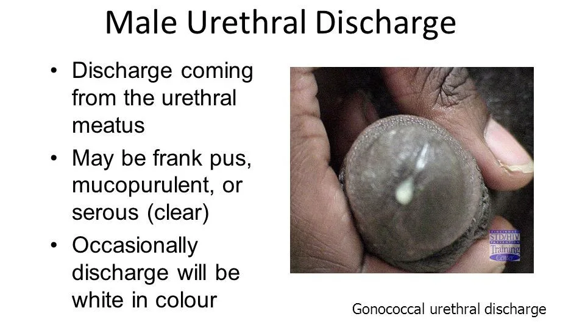
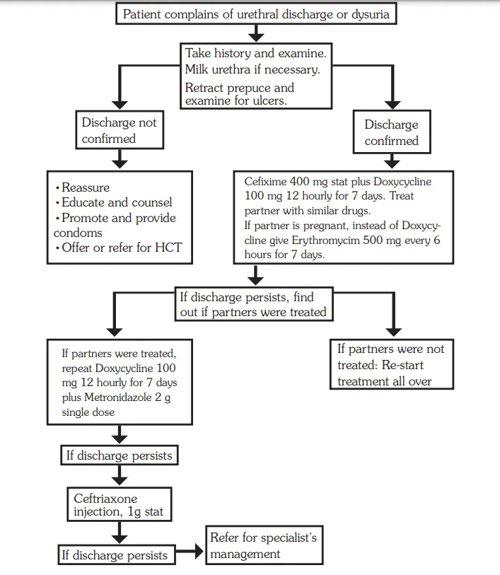
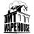

Expanded Nursing Uganda Explanation
Urethral Discharge Syndrome should be reviewed through safe maternal and newborn assessment, early recognition of danger signs, respectful communication and timely referral. Connect the definition to vital signs, bleeding, fetal or newborn wellbeing, patient education and local protocol requirements.
01 Urethral Discharge Syndrome
The amount of discharge varies depending on the causative pathogens as well as prior antibiotic treatment.
02 Clinical Presentation:
- Chief Complaint : Patients with this syndrome often complain of a discharge from the urethra. Mucus or pus at the tip of the penis; staining underwear
- Symptoms : They may have symptoms of burning sensation while passing urine and frequency of micturition.
- Visual Inspection : Examination might reveal a purulent discharge from the urethra. If the discharge is not readily seen, it may be necessary to milk the penis and massage it forwards before the discharge becomes visible. If the discharge is copious, do not milk or squeeze the penis.
- Prepuce Examination : If the patient is not circumcised, you should examine with the foreskin retracted so that you ascertain whether the discharge is from the urethra or from beneath the prepuce.
- Discharge Characteristics : The discharge may range from frank pus to mucopurulent.
Case Definition : Urethral discharge in men with or without dysuria.
03 Causes (Common and Uncommon):
- Neisseria Gonorrhoeae and Chlamydia Trachomatis : This syndrome is commonly caused by Neisseria gonorrhoeae and Chlamydia trachomatis in over 98% of cases.
- Other Infectious Agents : Trichomonas vaginalis , Ureaplasma urealyticum , and Mycoplasma spp .
- Mixed Infections : Mixed infections especially of Neisseria gonorrhoeae and Chlamydia trachomatis occur
04 Management:
All male patients with urethral discharge should be managed according to the syndromic chart.
Medicines
- Ceftriaxone 250 mg IM or Cefixime 400 mg single dose plus Doxycycline 100 mg every 12 hours for 7 days
If partner is pregnant
- Substitute doxycycline with erythromycin 500 mg every 6 hours for 7 days or Azithromycin 1 g stat if available
Treatment Procedure:
Clinical Assessment:
- Obtain a comprehensive medical history and conduct a thorough examination of the client.
- If urethral discharge is not evident, perform urethral milking.
- Retract the prepuce (if applicable) and examine for ulcers.
Comprehensive Treatment:
- Treat both the patient and their sexual partners simultaneously.
- Provide counselling on abstinence or emphasize condom use to prevent further transmission.
Medication:
- Administer Ceftriaxone 250 mg intramuscularly (IM) or Cefixime 400 mg as a single dose.
- Prescribe Doxycycline 100 mg every 12 hours for a duration of 7 days.
For Pregnant Partners:
- If the partner is pregnant, substitute Doxycycline with Erythromycin 500 mg every 6 hours for 7 days.
- Alternatively, administer Azithromycin 1 g as a single stat dose if available.
Persistent Symptoms Despite Partner Treatment:
- Investigate for the presence of ulcers under the prepuce.
- If discharge or dysuria persists, repeat Doxycycline 100 mg every 12 hours for 7 days.
- Administer Metronidazole 2 g as a single dose.
If Partners Were Not Treated Initially:
- Restart the initial treatment regimen and ensure partners are treated simultaneously.
Comprehensive STD Case Management Package:
- Education : Emphasis on treatment compliance.
- Condom Promotion : Provision and demonstration of correct usage.
- Partner Notification : Treatment for partners, whether symptomatic or not.
- HIV VCT Services: Offer or refer when necessary.
Continued Persistence of Discharge:
- Administer Ceftriaxone 1 g IM.
- If symptoms persist, consider referral for specialist management.
Counsel and educate all clients on:
- Treatment compliance.
- Condom use and provide condoms.
- Partner management.
- Offer or refer for HIV VCT services if necessary.
- Schedule a return visit.
- Abstinence from sex till all symptoms have resolved.
05 Abnormal Vaginal Discharge Syndrome
Click Here
06 Nursing Uganda Clinical Lens
Use Urethral Discharge Syndrome as a practical nursing topic, not only a memorized definition. Link cause, transmission, incubation, clinical features, treatment support and prevention.
- What to understand first: define urethral discharge syndrome, identify the normal or expected pattern, then explain what changes when the patient is unwell.
- Why it matters in care: the nurse must recognize risk early, explain findings clearly, document accurately and know when to escalate.
- How to revise it: connect each point to assessment, nursing diagnosis or care problem, intervention, rationale and evaluation.
07 Assessment Guide
- Temperature, pulse, respiratory status, hydration, pain, rash, wounds, stool, urine or sputum changes.
- Exposure history, travel, contacts, vaccination status and comorbidities.
- Specimen orders, isolation needs, antimicrobial history and danger signs.
08 Nursing Priorities, Rationales and Outcomes
- Use standard precautions and transmission-based precautions where needed.
- Support hydration, nutrition, medicines, monitoring and early referral for severe disease.
- Teach prevention, adherence, hygiene, safe water, vector control or contact tracing as relevant.
The rationale for these priorities is patient safety: nursing actions should prevent deterioration, reduce discomfort, support recovery and create clear evidence for the next caregiver.
- Expected outcome: Symptoms improve, complications are detected early, transmission risk is reduced and treatment is completed correctly.
09 Patient Teaching and Revision Check
- Explain urethral discharge syndrome in simple language the patient or caregiver can repeat back.
- Teach warning signs, medicine or follow-up instructions, hygiene or lifestyle points where relevant.
- For exams, prepare a short answer using: definition, causes or risk factors, signs, assessment, management, complications and prevention.
- For ward practice, document baseline findings, actions taken, patient response and the plan for review.
Illustrations and Diagrams (6)






Related Video Lectures
Watch nursing lecture videos on YouTube for this topic. Opens in a new tab.
Watch on YouTubeExternal link: YouTube may use its own cookies and terms. Nursing Uganda is not affiliated with YouTube.